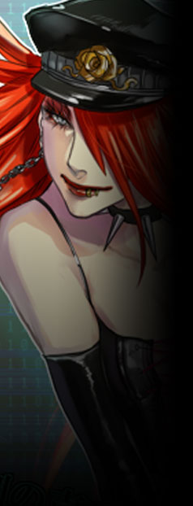
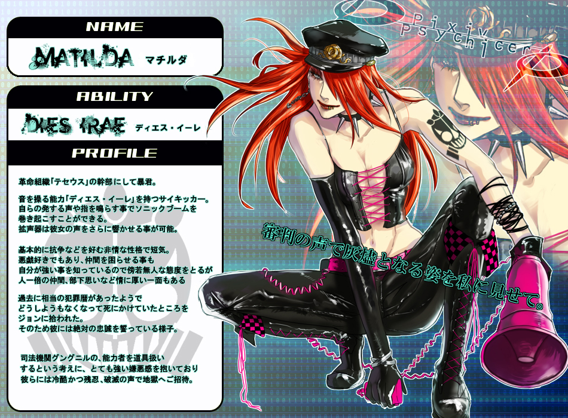

▼武装親衛隊【 ヘル 】
ジョン・ドゥの私兵部隊。小隊がいくつかあり、その総隊長をマチルダが務める。
ベースはあくまでマフィアであったが、テセウスが正式化されて以降はこちらも下層の正規部隊となった。
敵対者には苛烈かつ容赦なく、その矛先は【スヴァルトアルフ】や【ヨトゥン】は勿論のこと、 公式サイト原文
ジョン・ドゥの私兵とも言える武装親衛隊。
ベースはあくまでマフィアであったが、
武力による圧力を持ち、性質は軍閥に近い。 闇商会【 スヴァルトアルフ 】と癒着し腐敗している多くの下層ＹＤＦと衝突することも多い。 又、ヘルの絶対条件は「ジョン＝ドゥへの忠誠」である。 |
|
 |
マチルダ
|
||||||||||||||||||
|
【テセウス】の幹部であり、武装親衛隊【ヘル】の隊長。
元はグレイプニル隊員だったが、異能者を道具として扱う上層やグングニルに絶望。
好戦的かつ短気、自らの実力を疑わない自信家。悪戯好きな面もあり、仲間を困惑させる事もしょっちゅう。
異能【ディエス・イーレ】は音の操作に限定・特化したサイキッカー。
「私は誰の指図も受けないよ。ボス以外はね。」 |
|||||||||||||||||||
公式サイト原文
マチルダ
ジョン＝ドゥの側近。武装親衛隊ヘルの総隊長も務める。
過去は上層にてグレイプニルの隊員であった過去を持つが、
その後、ジョンに絶対の忠誠を誓い、
音を操作する【 ディエス・イーレ 】を持つサイキッカー能力者。
鬱屈した過去を持つが、現在の正確は好戦的でイタズラ好き。
「私は誰の指図も受けないよ。ボス以外はね。」 性能：基礎５ｐステータス＋ボス特性５ｐ |
|||||||||||||||||||
ピクサイ時代の資料 |
|||||||||||||||||||